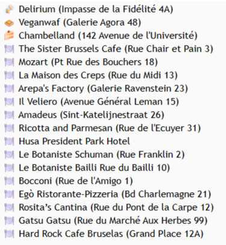

BRUSELAS
-
Albert Heijn
Cadena de supermercados.
Marca blanca perfectamente etiquetada sin gluten.
-
Chambelland
Opciones dulces y saladas.
Muy recomendable.
-
Veganwaf
Galerías Agora, cerca de la Grand Place.
Gofres 100% sin gluten y veganos.
Imprescindible en Bruselas.
11’ del hotel
-
La Maison des Creps
Creps de trigo sarraceno certificados.
Versiones dulces y saladas.
7’ del hotel
-
Italia in Tavola
Restaurante italiano 100% sin gluten.
Alejado del centro turístico.
-
Les 4 Jeudis
Restaurante vegetariano 100% sin gluten.
34’ del hotel
-
The Sister Brussels Café
Rue Chair et Pain 3
Restaurante 100% sin gluten.
Sandwiches y gofres dulces y salados.
9’ del hotel
-
Ricotta and Parmesan
Restaurante italiano.
Opciones sin gluten: pasta penne y risottos.
10’ del hotel
-
Il Veliero
Zona de instituciones europeas.
Lejos
-
Le Botaniste
Dos ubicaciones.
Vegetarianos con muchas opciones sin gluten.
Lejos
-
Restaurante Mozart
Opciones sin gluten.
10’ del hotel
-
Exki
Cadena por toda Bélgica.
Muchas opciones sin gluten.
11’ del hotel
-
Restaurante Amadeus
Rue Sainte-Catherine 26, 1000
3’ del hotel

← Volver a restaurante
← Volver al inicio